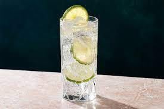

The Genuine Gin and Tonic

The Gin and Tonic is a cocktail made with a gin and tonic water poured over a large amount of ice.
It was invented by the English for their armies during the occupation of India because the tonic water
contained quinine, which was a common malaria cure. Today the drink is a favorite of anyone who enjoys a refreshing
afternoon cocktail. The Genuine Gin and Tonic expands upon this drink with its own flavorful flair.
Ingredients
STEPS
1. Use the knife to cut the lime into quadrants.
2. Pour two ounces of gin int the measuring glass.
3. Pour the ice in the glass.
4. Now, pour in the gin.
5. Fill the rest of the glass with tonic water (but leave room for lime.)
6. Squeeze a lime quadrant into the glass then insert squeezed lime for additonal flavor.
7. Add Lime Juice.
8. Stir with spoon.
9. After drinking three or four, watch TV.
Home Page